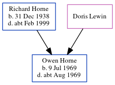

Owen Richard Horne 1969 - c1969
[ Home ] | [ Calendar ] | [ Surnames Index ] | [ Census Index ] | [ Family History ]The child of Richard Horne and Doris Lewin, Owen Horne, the fourth cousin on the father's side of Nigel Horne, was born in Thanet, Kent, England on Jul 9, 19691.
He died in Thanet c. Aug 19691.
Parents
- Richard John was born on Dec 31, 1938
Citations
- England & Wales deaths 1837-2007 - Findmypast
Media
England & Wales deaths 1837-2007 - BMD/D/1969/3/AZ/000504/124
England & Wales births 1837-2006 - BMD/B/1969/3/AZ/000792/076
Family Tree
Generated by ged2site. Last updated on Jun 11, 2024